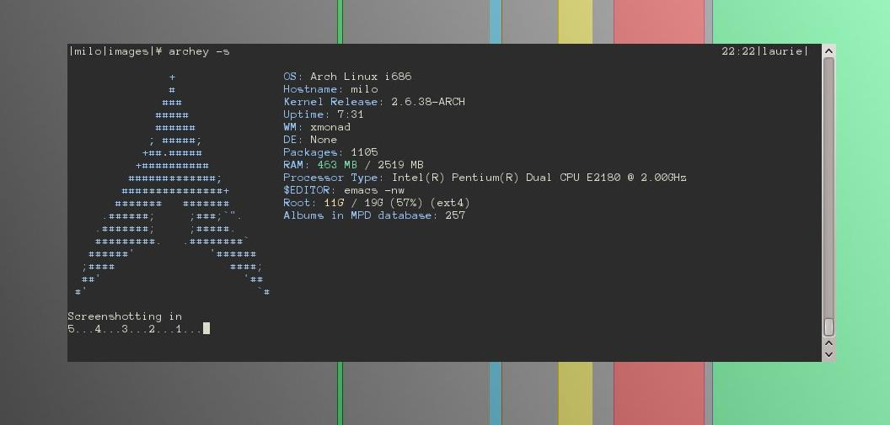

Archey3 is a customisable system information printer aimed at people wishing to take screenshots of their desktops.
The recommened way of installing Archey3 is via the archlinux user repository. Using an AUR helper such as yaourt, install it with one command. However, if you do not have one installed, you can get it by running:
$ wget https://aur.archlinux.org/packages/archey3/archey3.tar.gz $ tar xfvz archey3.tar.gz $ cd archey3 $ makepkg $ pacman -U archey3-*.pkg.tar.xzYou can then run Archey3 via
$ archeyor
$ archey3The above methods installs Archey3 from it's master git repo. If you wish to clone that repo to work on it, either fork it on github, or clone it by running:
$ git clone git://github.com/bluepeppers/archey3
Laurie Clark-Michalek (bluepeppers@archlinux.us)
Melik Manukyan (melik@archlinux.us)
unexist (unexist@dorfelite.net)